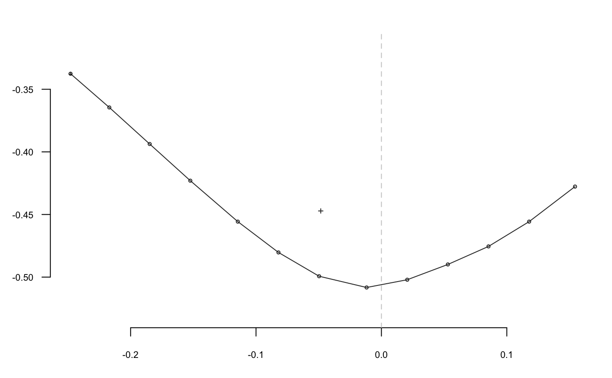
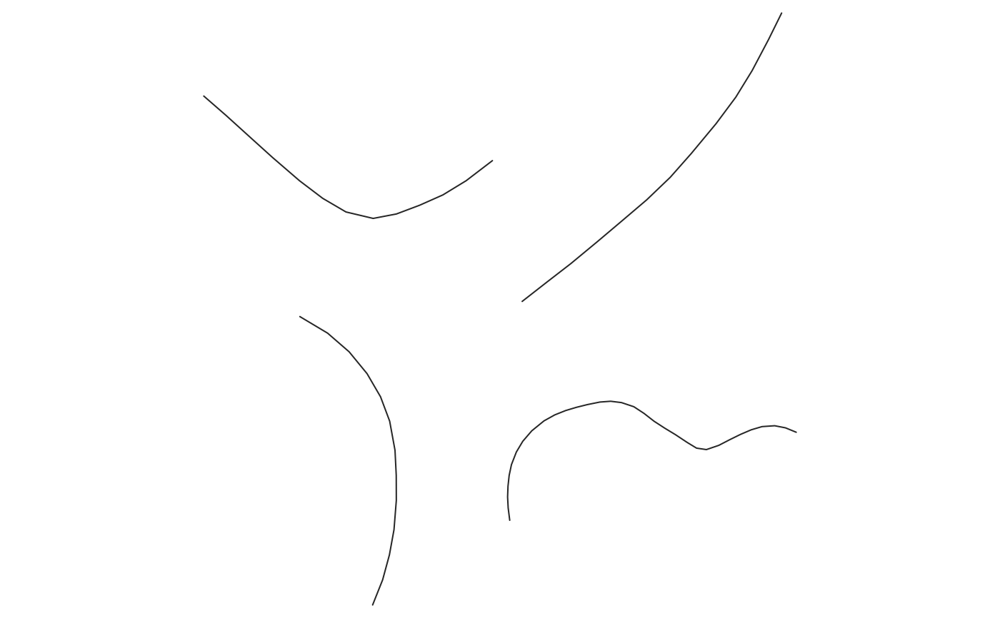
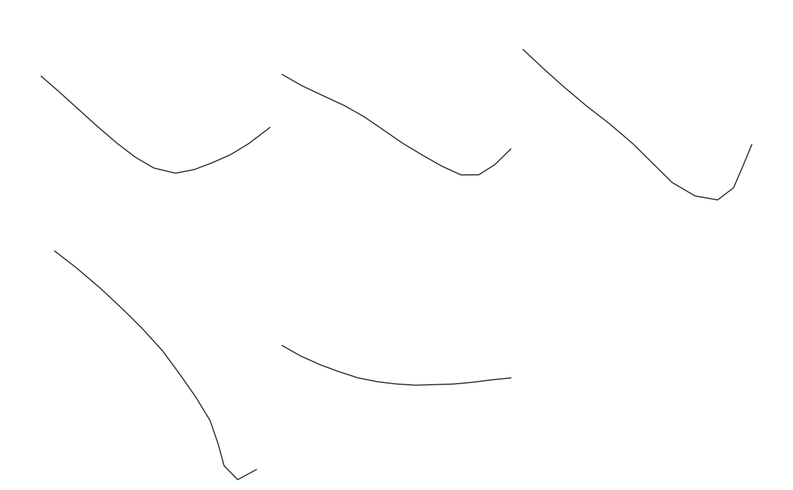
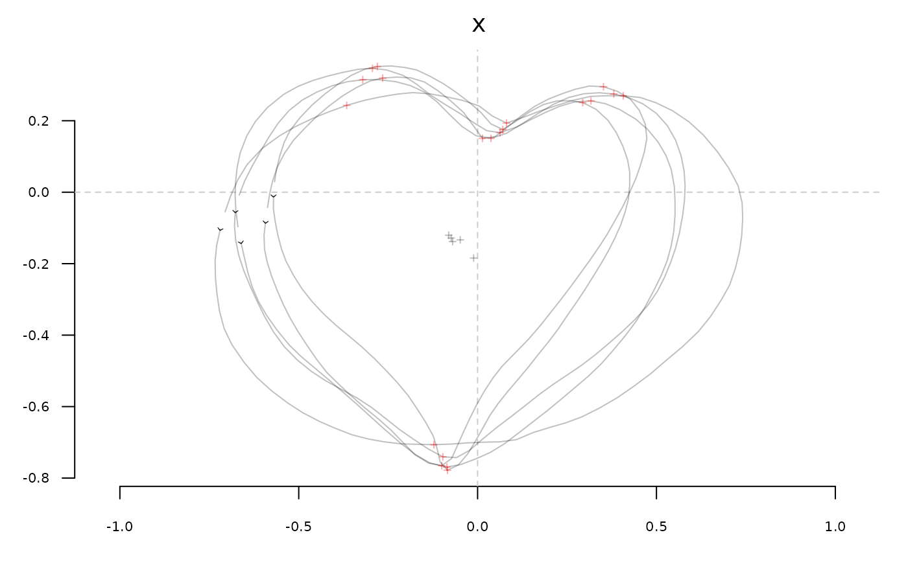
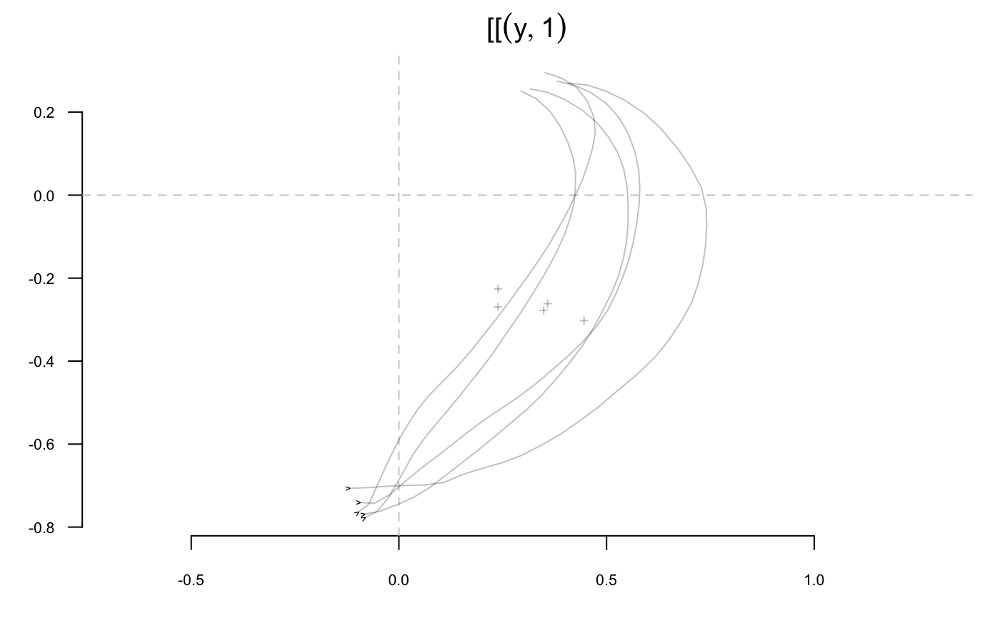
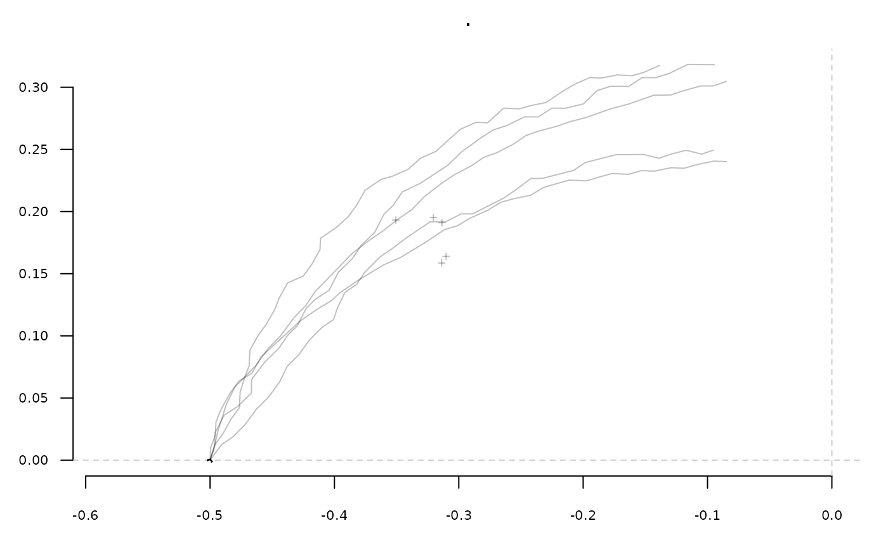
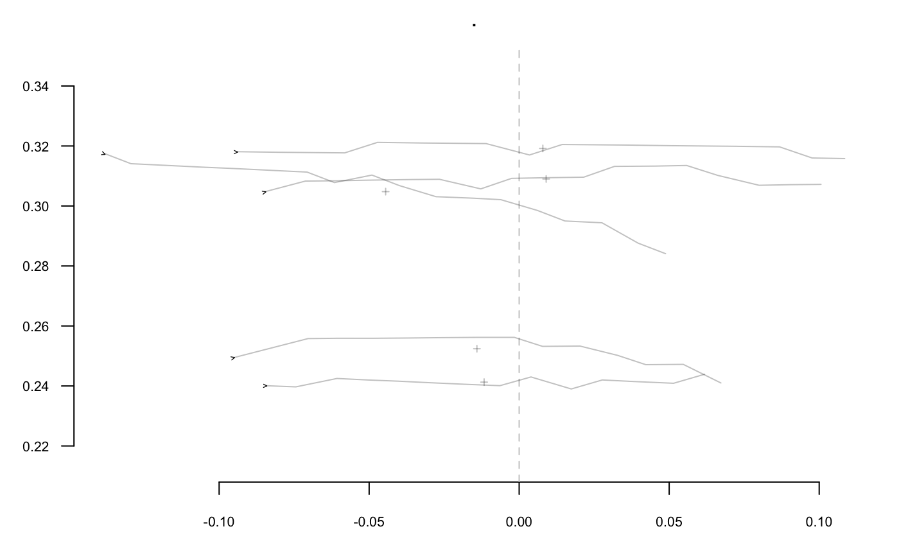
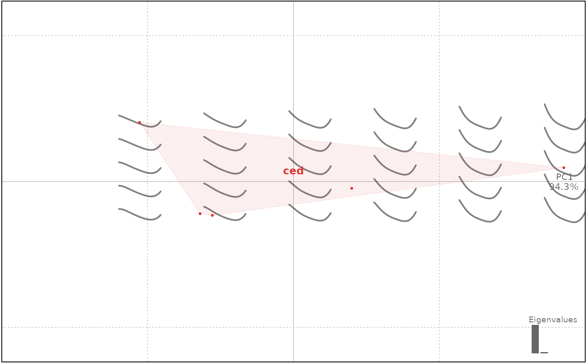

Takes a shape with n coordinates. When you pass this function with at least two ids (<= n), the shape will be open on the corresponding coordinates and slices returned as a list
Arguments
- coo
matrixof(x; y)coordinates or any Coo object.- ids
numericof length >= 2, where to slice the shape(s)- ldk
numericthe id of the ldk to use as ids, only onOutandOpn. If provided,idswill be ignored.
Value
a list of shapes or a list of Opn
See also
Have a look to coo_slidegap if you have problems with gaps after slicing around landmarks and/or starting points.
Other coo_ utilities:
coo_align(),
coo_aligncalliper(),
coo_alignminradius(),
coo_alignxax(),
coo_baseline(),
coo_bookstein(),
coo_boundingbox(),
coo_calliper(),
coo_centdist(),
coo_center(),
coo_centpos(),
coo_close(),
coo_down(),
coo_dxy(),
coo_extract(),
coo_flipx(),
coo_force2close(),
coo_interpolate(),
coo_is_closed(),
coo_jitter(),
coo_left(),
coo_likely_clockwise(),
coo_nb(),
coo_perim(),
coo_range(),
coo_rev(),
coo_right(),
coo_rotate(),
coo_rotatecenter(),
coo_sample(),
coo_sample_prop(),
coo_samplerr(),
coo_scale(),
coo_shearx(),
coo_slide(),
coo_slidedirection(),
coo_slidegap(),
coo_smooth(),
coo_smoothcurve(),
coo_template(),
coo_trans(),
coo_trim(),
coo_trimbottom(),
coo_trimtop(),
coo_untiltx(),
coo_up(),
is_equallyspacedradii()
Examples
h <- slice(hearts, 1:5) # speed purpose only
# single shape, a list of matrices is returned
sh <- coo_slice(h[1], c(12, 24, 36, 48))
coo_plot(sh[[1]])

panel(Opn(sh))

# on a Coo, a list of Opn is returned
# makes no sense if shapes are not normalized first
sh2 <- coo_slice(h, c(12, 24, 36, 48))
panel(sh2[[1]])

# Use coo_slice with `ldk` instead:
# hearts as an example
x <- h %>% fgProcrustes(tol=1)
#> iteration: 1 gain: 8.1326
#> iteration: 2 gain: 0.00031224
# 4 landmarks
stack(x)

x$ldk[1:5]
#> [[1]]
#> [1] 65 56 50 19
#>
#> [[2]]
#> [1] 69 60 52 21
#>
#> [[3]]
#> [1] 68 60 51 21
#>
#> [[4]]
#> [1] 69 59 53 23
#>
#> [[5]]
#> [1] 71 61 54 21
#>
# here we slice
y <- coo_slice(x, ldk=1:4)
# plotting
stack(y[[1]])

stack(y[[2]])
# new ldks from tipping points, new ldks from angle
olea %>% slice(1:5) %>% # for the sake of speed
def_ldk_tips %>%
def_ldk_angle(0.75*pi) %>% def_ldk_angle(0.25*pi) %>%
coo_slice(ldk =1:4) -> oleas
oleas[[1]] %>% stack

oleas[[2]] %>% stack # etc.

# domestic operations
y[[3]] %>% coo_area()
#> shp1 shp2 shp3 shp4 shp5
#> 0.001684956 0.007028829 0.010968094 0.009962128 0.016920135
# shape analysis of a slice
y[[1]] %>% coo_bookstein() %>% npoly %>% PCA %>% plot(~aut)
#> 'nb.pts' missing and set to: 31
#> 'degree' missing and set to: 5
#> will be deprecated soon, see ?plot_PCA
